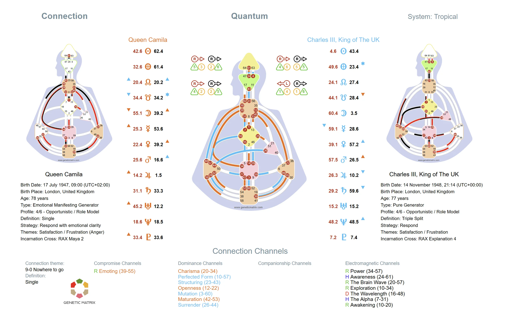

Cuando dos personas se unen, emerge un nuevo diseño. La Carta de Conexión revela la mecánica de una relación mostrando lo que se crea entre dos individuos que ninguno posee por sí solo.
En Diseño Humano, una Carta de Conexión, también llamada Carta Compuesta, se crea superponiendo dos BodyGraphs individuales. Cuando las dos cartas se combinan, pueden completarse Canales que ninguna persona tiene por sí sola, pueden definirse Centros que ninguna tiene independientemente, y emerge una configuración energética distinta. Este diseño compuesto representa la mecánica de la relación misma.
Una Carta de Conexión no se trata de compatibilidad en el sentido convencional. Revela las dinámicas específicas que surgen cuando dos personas comparten espacio. Algunas conexiones crean definición compartida que amplifica la energía. Otras crean atracción electromagnética. Otras aún introducen condicionamiento que puede sentirse desafiante, desconocido o catalizador. La carta hace que estas dinámicas sean visibles y medibles.
Definición Unilateral en la Relación
La dominancia ocurre cuando una persona tiene un Canal definido y la otra no. Esto crea una influencia energética consistente en la relación, donde una persona aporta una manera fija de operar que moldea la dinámica compartida. Un canal de dominancia puede ser especialmente amplificador para la otra persona si conecta dos Centros indefinidos en su diseño. La dominancia no es inherentemente negativa, pero puede crear desequilibrio si la energía no se reconoce conscientemente.
Definición Comprometida
El compromiso ocurre cuando una persona tiene un Canal completo definido y la otra tiene una de las Puertas en ese Canal. En la relación, la persona con la Puerta colgante recibe la Puerta opuesta de la otra persona y puede sentir como si ahora tuviera acceso a todo el Canal. Pero el Canal permanece definido por la otra persona, no por ella. Esto crea una dinámica comprometida en la cual la persona con la Puerta colgante puede confundir la consistencia prestada con la propia, a menudo llevando a resistencia, frustración y fricción repetida si no se reconoce la mecánica.
Atracción a Través de la Polaridad
Una conexión electromagnética se forma cuando una persona tiene una Puerta de un Canal y la otra persona tiene la Puerta opuesta, completando el Canal entre ellas. Este es el mecanismo clásico de atracción en Diseño Humano. El Canal completado crea una nueva energía que ninguna persona tiene por sí sola, y puede amplificar fuertemente la energía en cualquier Centro indefinido donde una o ambas personas cargan con la Puerta colgante. Al mismo tiempo, la química no siempre es estable. La otra persona aporta solo una expresión específica de Línea, Color, Tono y Base de la Puerta en lugar del rango completo de posibles variaciones, y esa expresión puede ser armoniosa o disonante con la Puerta en el otro extremo. La atracción permanece, pero puede alternar entre caliente y fría, creando una dinámica que a menudo se siente imposible de resolver e imposible de ignorar.
Canal Compartido
La compañía ocurre cuando ambas personas tienen el mismo Canal definido. Esto crea una sensación de familiaridad, reconocimiento mutuo y facilidad alrededor de esa energía porque ambas ya la cargan de manera fija. No se crea nueva definición entre ellas y no hay atracción electromagnética alrededor de ese tema, por lo que la mente a menudo pasa por alto el valor de la compañía. Sin embargo, puede aportar estabilidad, facilidad y una sensación natural de ser comprendido.
Nueva Definición Entre Dos Personas
Cuando dos cartas se combinan y se completan nuevos Canales, Centros previamente indefinidos pueden definirse en la Carta de Conexión. Esto significa que la relación crea energía consistente y confiable que ningún individuo lleva por sí solo. Esta nueva definición moldea el carácter y las dinámicas de la relación misma.
Experiencia Social Compartida
Los Centros que permanecen indefinidos en la Carta de Conexión revelan donde la relación permanece abierta. Estas son áreas de sensibilidad compartida donde la conexión es más susceptible a la amplificación, condicionamiento e influencia de otras personas o del entorno. Lo que permanece indefinido entre dos personas se convierte en un lugar de experiencia social compartida y también puede ser una fuente de vulnerabilidad, aprendizaje y sabiduría.
Más que la Suma de las Partes
Una Carta de Conexión no es simplemente dos cartas sumadas. Representa una entidad energética distinta con su propio Tipo, Autoridad, patrón de definición y dinámicas. La relación tiene su propia firma mecánica que opera independientemente de cualquiera de los individuos. Por esto algunas relaciones se sienten profundamente diferentes de lo que cualquiera de las personas experimenta solo.
Conciencia en las Relaciones
La Carta de Conexión es una herramienta para la conciencia, no para el juicio. No determina si una relación tendrá éxito o fracasará. Revela las dinámicas mecánicas específicas en juego para que ambas personas puedan navegar la conexión con mayor comprensión. Esto se aplica a asociaciones románticas, amistades, relaciones comerciales y dinámicas familiares.
Nota
La Carta de Conexión revela la mecánica de la relación, no su calidad. Una carta llena de conexiones electromagnéticas no es inherentemente mejor o peor que una con dominancia o compromiso. Lo que importa es la conciencia de las dinámicas y cómo cada persona las navega a través de su propia Estrategia y Autoridad.
Una Carta de Conexión muestra cómo dos diseños individuales se combinan para formar una tercera configuración compartida. Revela Canales completados, nueva definición y la mecánica relacional específica creada entre dos personas.

Ejemplo de una Carta de Conexión de Diseño Humano. Haga clic para ampliar.
Una Carta de Conexión se crea superponiendo dos BodyGraphs individuales para revelar la mecánica de una relación. Cuando las dos cartas se combinan, pueden completarse Canales, pueden definirse Centros, y emerge una configuración energética distinta. Este diseño compuesto muestra las dinámicas específicas que existen entre dos personas.
Una conexión electromagnética ocurre cuando una persona tiene una Puerta de un Canal y la otra persona tiene la Puerta opuesta, completando el Canal entre ellas. Esto crea una nueva energía que ninguna persona tiene individualmente y es uno de los mecanismos primarios de atracción en Diseño Humano. Puede sentirse magnético y convincente, incluso cuando la química fluctúa entre caliente y fría.
La dominancia ocurre cuando una persona tiene un Canal definido y la otra no. El compromiso ocurre cuando una persona tiene un Canal completo definido y la otra tiene una de las Puertas en ese Canal. En dominancia, una persona aporta una energía fija a la relación. En compromiso, la persona con la Puerta colgante puede sentir que tiene acceso a todo el Canal a través de la relación, pero el Canal permanece definido por la otra persona.
No. La Carta de Conexión revela las dinámicas mecánicas entre dos personas, pero no predice resultados. Una relación con muchas conexiones electromagnéticas no es inherentemente mejor que una con dominancia, compromiso o compañía. El valor de la carta es la conciencia de la mecánica, para que cada persona pueda navegar la conexión a través de su propia Estrategia y Autoridad.
Sí. Genetic Matrix proporciona herramientas para generar Cartas de Conexión entre dos individuos. Puede ver el BodyGraph combinado, identificar las dinámicas electromagnéticas, dominancia, compromiso y compañía, y entender la nueva definición creada en la relación.
Explore la mecánica transpersonal que emerge en grupos pequeños de 3 a 5 personas y cómo cambia la mecánica del aura en las dinámicas familiares.
Descubra la aplicación de grupos pequeños y orientada a carrera del Diseño Humano a través del sistema BG5.
Aprenda sobre mecánicas de grupos transpersonales más grandes y las estructuras que emergen más allá de la conexión uno a uno.
Get Advanced or Pro para generar una Carta de Conexión y explorar la mecánica específica entre usted y otra persona.
Get Advanced or Pro →